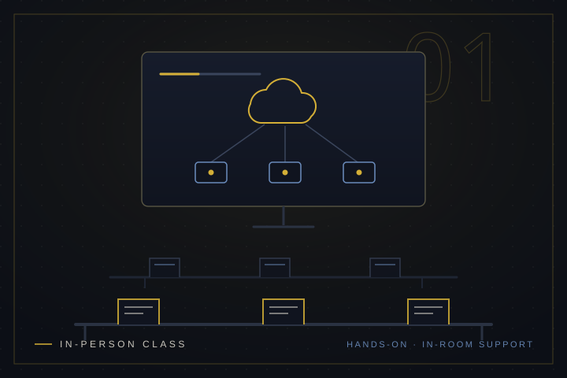
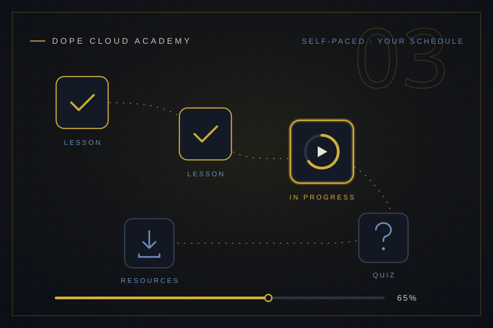
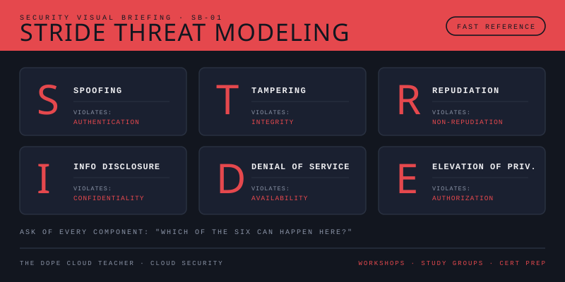
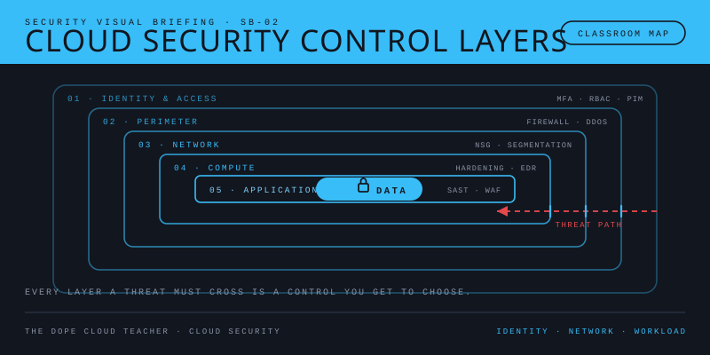
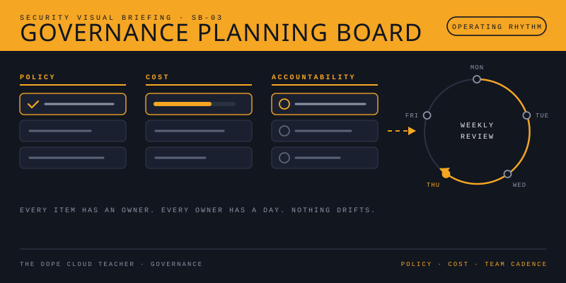

1. Join an In-Person Class
PG County Parks & Planning cohorts with weekly structure, hands-on labs, and in-room support.
View PG County Parks & Planning ClassesOne curriculum. Three ways to learn. Choose the path that fits your schedule and support needs while staying aligned to real certification goals and job outcomes.
Start with instructor-led classes or move at your own pace in the Academy.

PG County Parks & Planning cohorts with weekly structure, hands-on labs, and in-room support.
View PG County Parks & Planning Classes
Live online cohorts with schedule accountability, office hours, and replay access.
View Live Virtual Classes
Self-paced tracks with modular lessons, quizzes, downloadable resources, and progress tracking.
Enter Dope Cloud AcademyThese are not decorative graphics. They are teaching assets built to compress complex cloud and security concepts into faster decision-making, stronger certification retention, and clearer team communication.
Fast-reference visuals your learners can use in workshops, study groups, and certification prep.

Use six concrete prompts to identify risk early in your architecture and CI/CD flow.
Open STRIDE Visual
Break down identity, network, and workload protections in one clear classroom-ready map.
Open Security Visual
Connect policy, cost, and team accountability into a weekly operating rhythm.
Read Governance GuideEach pathway includes guided visuals and practical case scenarios learners can apply immediately.
Students practice securing cloud identities for a multi-site community center with shared devices.
Teams break a monolithic app into resilient services while balancing cost, speed, and reliability.
Instructors map cloud and AI skills into a 6-week pathway with measurable outcomes.

Learners map spoofing, tampering, repudiation, information disclosure, denial of service, and privilege escalation risks before deployment.
Enrollment windows update as new in-person and live cohorts open.
We now support a dedicated integrated curriculum path and active instructor recruitment for in-person and live cohort delivery.
One reusable lesson architecture that powers in-person classes, live virtual cohorts, and academy tracks without content duplication.
Open Curriculum PathsExperienced cloud, security, AI, and DevSecOps professionals can apply to teach DCT programs.
Apply as Instructor